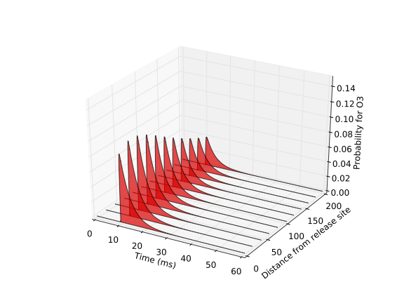

This is the readme for the model associated with the paper: Synaptic Efficacy as a Function of Ionotropic Receptor Distribution: A Computational Study PLOS One (2015) These files model the response of an AMPA receptor kinetic model to the release (and diffusion) of glutamate as a function of distance between receptor and release site. Content of the zip file: 3 files. One file is the model of NT diffusion and AMPA receptor (XML file). The other 2 are python scripts used to run the simulation and plot the results. The results plotted correspond to figure 1 of the paper. Requirements: Libroadrunner (free open source simulation engine), Python, Numpy and MatplotLib. To run: In a terminal, type: python simulate_model.py Results corresponding to Fig. 1 of the manuscript are found in the following files: - O2_all_distances.pdf - O3_all_distances.pdf  - O4_all_distances.pdf For additional details, email jbouteil_at_usc.edu